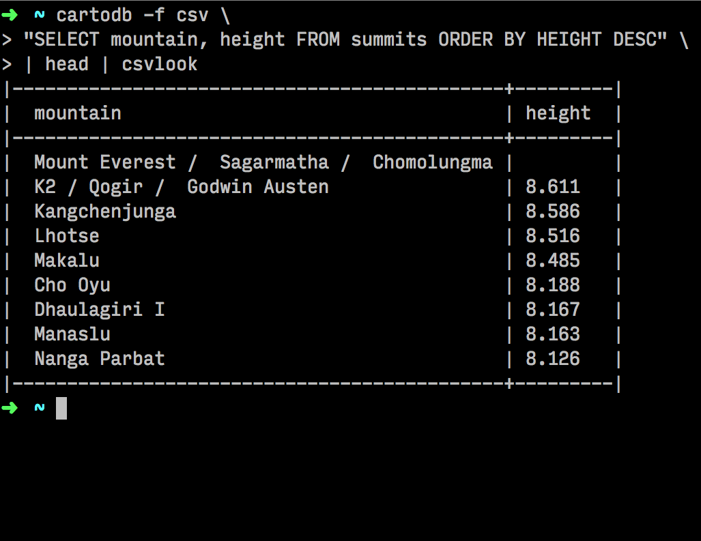
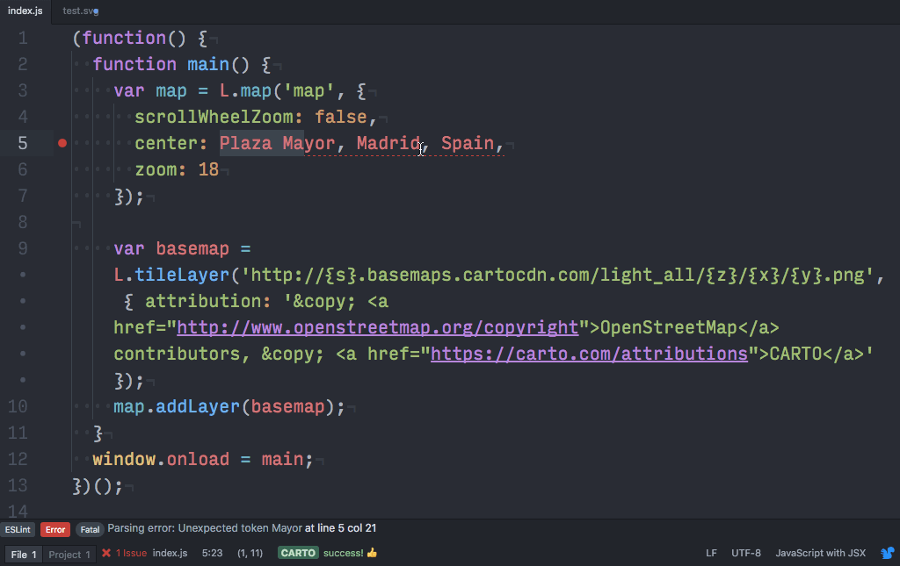
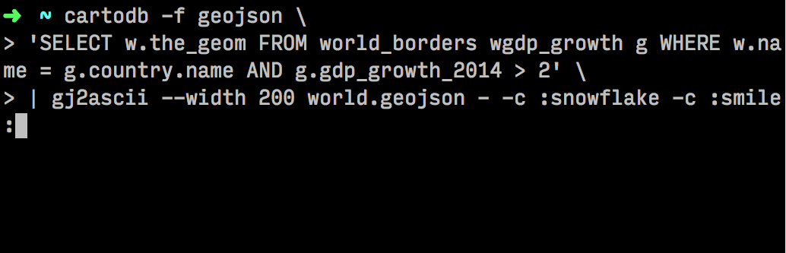

Command-Line Geography
Hi, I'm Erik :) 👋
github, twitter: @nerik
I live in Madrid and I'm an engineer at Vizzuality.
Vizzuality builds amazing mapping and viz projects, essentially for NGOs.
We mostly have a web-based approach to GIS.
Leaflet, D3, Carto(DB).js, PostGIS...
React, Redux, Backbone, Webpack...
Ruby on Rails, Python, Postgre...
Aaaaaand we are !
So, I'm a front-end engineer

 xkcd
xkcd
Summary:
- tools of the trade
- a starter kit
- CARTO on the command line
- Atom for webmapping
- geocoding
- bonus track: emoji maps
- goodies
Tools of the trade
Carto(DB)
Define Carto:
Empower organizations to optimize operational performance, strategic investments, and everyday decisions with CARTO Engine
Improve customer satisfaction by 15%
Carto is basically:
- a PaaS Postgres/PostGIS instance
- a supercharged Postgres/PostGIS instance: geocoding, routing, basemaps, curated open datasets...
- a set of REST APIs
- a semi-WYSIWYG GIS piece of software (the Builder)
Why Carto?
- kind learning curve
- 1-stop-shop
- serves as a cheap and convenient back-office (downside: you need connectivity)
- the Builder is amazing for prototyping
Disclaimer: I previously worked at Carto
Disclaimer 2 / fun fact: Carto(DB) is originally a Vizzuality spin-off
Tools of the trade: Atom
Chrome + Electron
Chrome + Electron
Tools of the trade: a shell and a terminal
Namely:
- zsh
- oh-my-zsh
- iTerm 2
- node.js, npm, python, etc...
- bonus: the Input Mono font
a starter kit
«A beginning is a very delicate time»
Enter
Yeoman + Carto
$ npm i -g yo generator-cartodb
$ yo cartodb
$ sudo npm i -g yo generator-cartodb
$ sudo yo cartodb
local server
liveReload
eslint
a prototyping toolchain
Uses NPM as a task runner
(add gulp or grunt as you go)
Uses cat to bundle JS
(use webpack or browserify as you go)
Tries to be a compromise between too simple and overly complicated toolchains (1000 lines gulpfiles, obscure webpack config, etc)
CARTO on the command line
CARTO API clients
- Python
- Ruby
- Node.js
Python

- SQL and Import APIs
- The "official" client
- Has one contributor inside CARTO (Dani Carrion)
Ruby
- Deprecated ¯\_(ツ)_/¯
Node.js
- SQL and Import APIs
- Named maps API
- CLI access
SQL API
a simple select (JSON)
CSV + CSVKit
the -f (--format) option
CSVKIT: csvlook
CSVKIT: csvcut, csvstat
GeoJSON + geojson.io
GeoJSON output
piping to geojsonio

Authenticated queries
username (-u) not enough for write ops
specify api key (-a / --api_key)
Import API
shapefile -> carto

--url
Atom for GIS
Atom for GIS
Atom for webmapping
APM
Yay! An integrated package manager! (merely an NPM wrapper, actually)
$ apm install linter
$ apm install highlight-selected
$ apm install emmet
$ apm install pretty-json
$ apm install pigments
$ apm install color-picker
$ apm install language-carto
$ apm install carto-api
linter
highlight-selected
emmet
color-picker
pigments
language-carto
Remember CARTO APIS? Now in Atom!
run a SQL query, get some CSV
let's feed some GeoJSON to L
and some SVG, because why not
file import from the tree view
Improve customer satisfaction by 15% !
apm install carto-api
PRs and insults -> @nerikgeocoding
CARTO provides geocoding
for various entities, points and polys
CARTO provides geocoding and routing
at SQL level
which means, also in your shell :)
street-level
carto-geocode-sql
carto-geocode-sql
mötley crüe geocoding
mötley crüe geocoding
geocoding in Atom
bonus track: emoji maps
gj2ascii
"Render spatial vector data as ASCII or emoji with Python on the commandline."
heed the "-" !
goodies
Thanks !
@nerik
soundtrack: Ibrahim Ferrer, Ólafur Arnalds, Jordi Savall, The Cure, Bill Withers